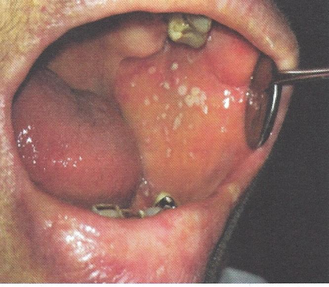

รอยโรคเชื้อราแคนดิดาชนิดเยื่อเทียม
ลักษณะคราบสีขาวหรือเหลืองสะสมอยู่บนเยื่อบุผิวช่องปากที่มีสีแดงมากกว่าปกติ
สามารถขูดคราบสีขาวเหลืองออกได้
ยืนยันด้วยการย้อม (smear) เช่น 10% KOH หรือ gram stain
อาจมีอาการระคายเคืองหรือแสบร้อน
พบได้บ่อยในผู้ป่วยที่มีความผิดปกติของระบบภูมิคุ้มกัน
หรือใช้ยาสเตียรอยด์หรือยาที่มีฤทธิ์กดภูมิคุ้มกัน